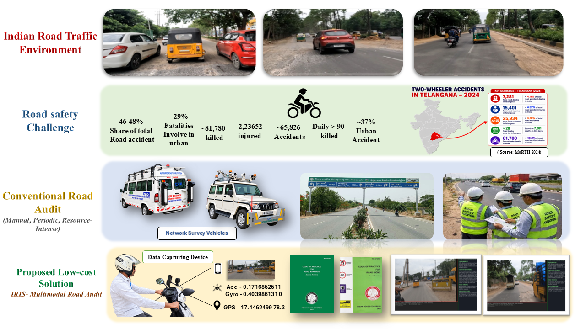
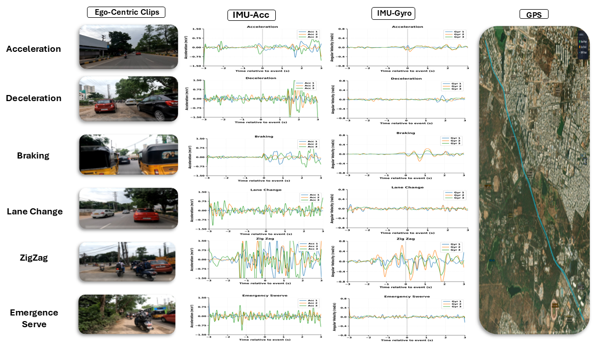
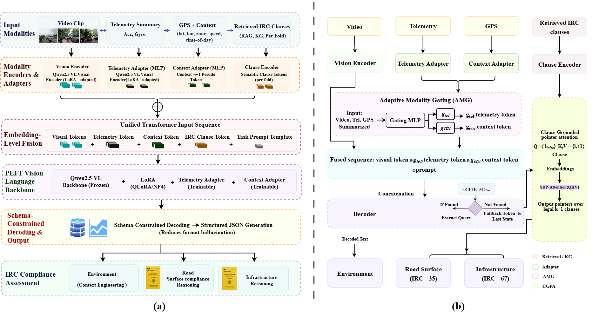
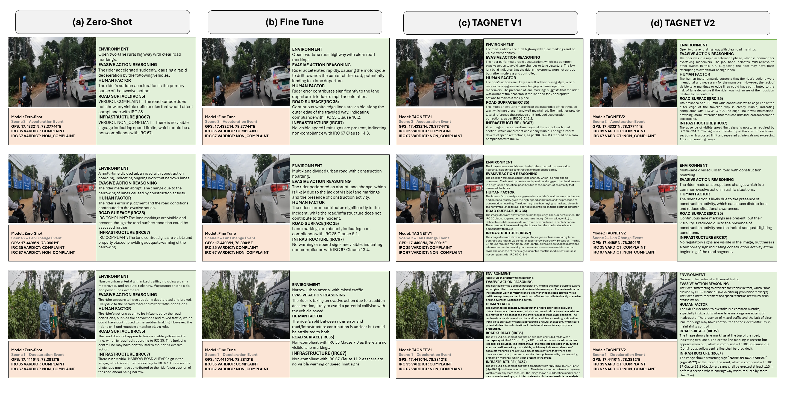

ICVGIP 2026

Roads in India often have degraded surfaces, edge and boundary drops, and missing lane markings. We propose IRIS, a multimodal system that combines egocentric video, smartphone motion sensor (IMU) data, and GPS to collect visual, motion, and location evidence. IRIS links this evidence to the relevant Indian Roads Congress (IRC) clauses, so road safety can be checked, compliance can be verified, and audit reports can be produced. It is a low-cost and scalable way to assess road safety.
We introduce IRIS, a multimodal framework for infrastructure-oriented road-safety auditing that combines synchronized egocentric video, inertial measurements, GPS, and a machine-readable Indian Roads Congress (IRC) knowledge graph. IRIS treats localized evasive events as complementary evidence, reasoning about their associated infrastructure conditions, locations, and compliance with applicable IRC requirements.
We use a low-cost mobile sensing platform on a two-wheeler during real road trips.
Egocentric video
Acceleration and angular velocity on 3 axes
Latitude, longitude, altitude and speed
The recordings are on Hugging Face.


We propose TAGNET-V1 (figure (a)), a parameter-efficient multimodal architecture. It takes video, motion sensor (IMU) data, context from GPS, and the retrieved IRC clauses, and turns them all into one shared form that a language model can read. Small add-on modules (adapters) keep the structure of each input; a gate called Adaptive Modality Gating (AMG) decides how much weight to give the motion data and the context for each event, as shown in TAGNET-V2 (figure (b)). The combined input, made of the video tokens, the task prompt, and the IRC clauses, is turned into an answer in a fixed format, to check compliance with IRC:35-2015 and IRC:67-2022.
| Model | Total parameters | Trainable parameters | Trainable share |
|---|---|---|---|
| TAGNET-V1 | 3.758B | 3.686M | 0.0981% |
| TAGNET-V2 | 2.211B | 2.179M | 0.0986% |

@inproceedings{iris2026,
title={IRIS: Infrastructure-aware Multimodal Reasoning for Road Safety Auditing with Regulatory Compliance},
author={Vedula, Abhishek and Keerthana, A R and Nidamanuri, Jaswanth and Subramanian, Anbumani and Jawahar, C V},
booktitle={Proceedings of the Indian Conference on Computer Vision, Graphics and Image Processing (ICVGIP)},
year={2026}
}The citation will be updated when the paper is published.
The project was supported by iHub-Data and Mobility, CVIT at IIIT Hyderabad. We also thank Manasa and Md. Azahar for the support in data collection.